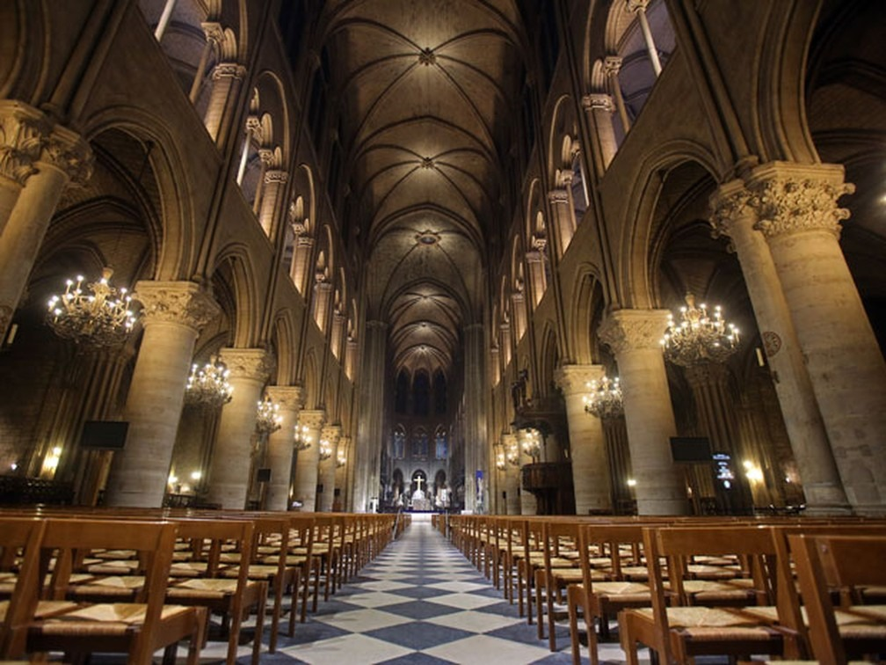
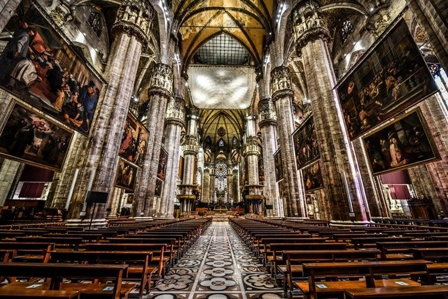
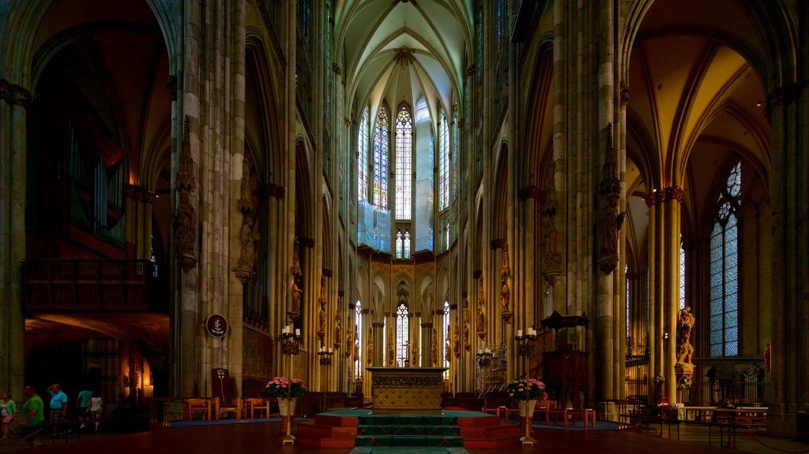

Monumentos Góticos
Explore as maravilhas arquitetônicas do estilo gótico
Galeria de Monumentos Góticos

Catedral de Notre-Dame
Paris, França

Catedral de Milão
Milão, Itália

Catedral de Colônia
Colônia, Alemanha
Abadia de Westminster
Londres, Inglaterra
Detalhes do Monumento
Selecione um monumento acima para ver mais detalhes.
Características da Arquitetura Gótica
Arcos Ogivais
Arcos pontiagudos que permitem maior altura e distribuição de peso.
Abóbadas de Nervuras
Tetos com nervuras cruzadas, permitindo estruturas mais altas e leves.
Vitrais
Janelas coloridas que contam histórias bíblicas e permitem entrada de luz.
Arcobotantes
Suportes externos que permitem paredes mais finas e janelas maiores.